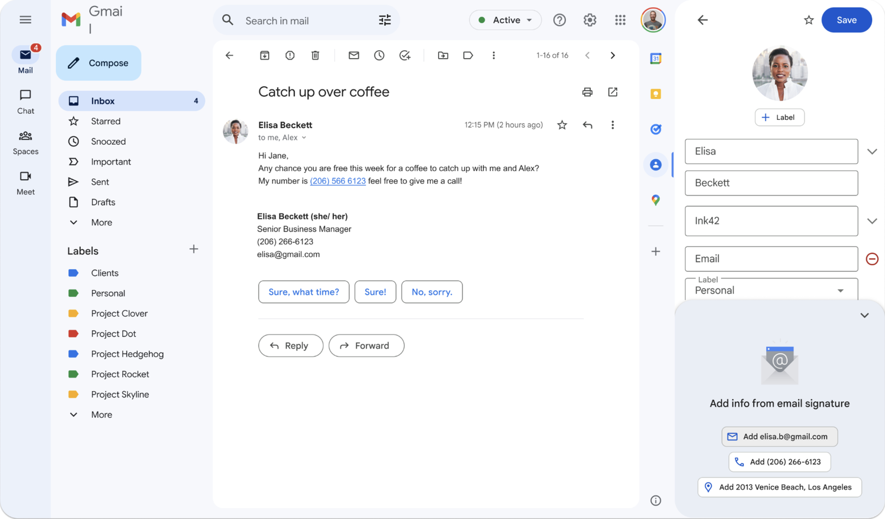
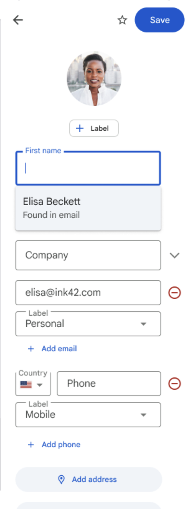
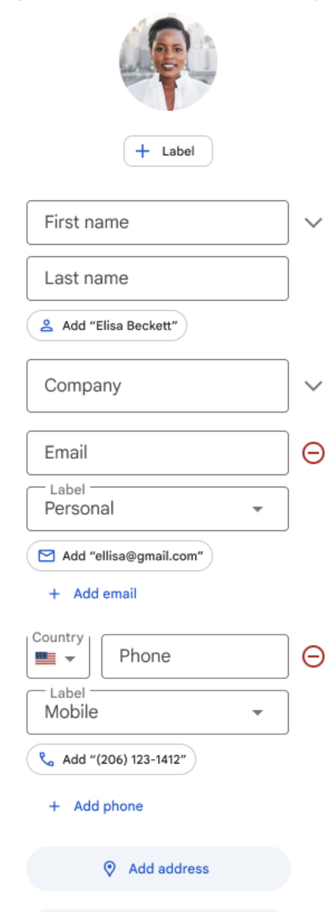
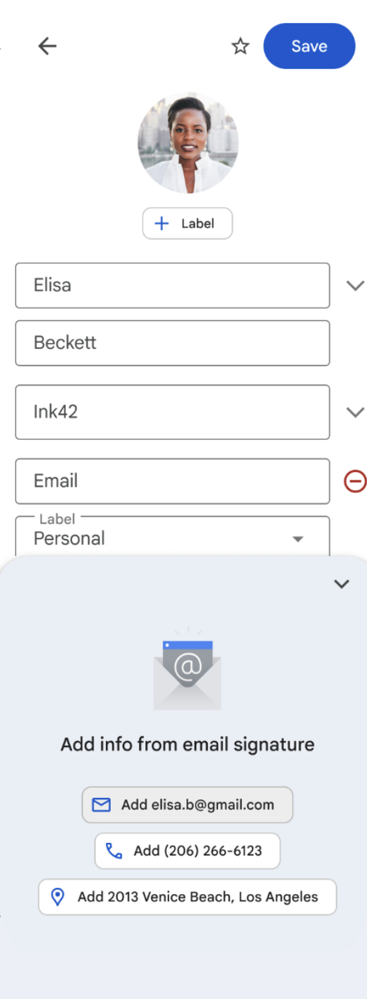
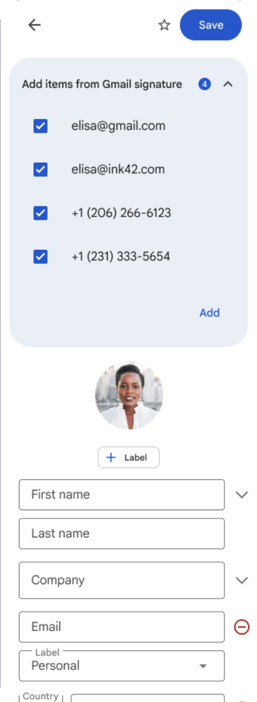
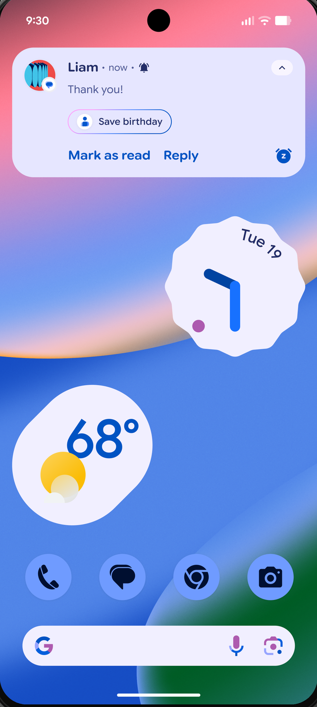
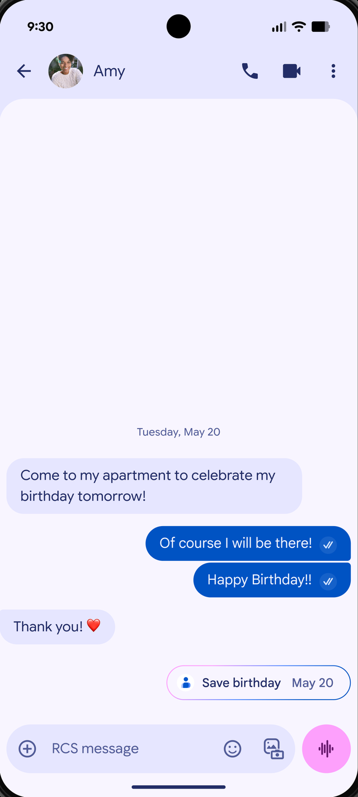

GOOGLE · 2025 - 2026
Google Contacts: AI-Powered Contact Intelligence
Leadership handed the team a one-year AI mandate with no clear problem attached. I ran the sprint that aligned engineering and PM around a real user problem, and turned it into 3 shipped features reaching 4M DAU.
WHERE WE STARTED
The Brief
No One Could Define
Google Contacts had always been a passive repository. In 2025, a company-wide AI push landed on the team with a simple brief: automatically capture the people users interact with across Google. My job was to lead the team out of ambiguity by defining the real user problem.
As lead product designer, I ran the research that reframed the brief, led the sprint that aligned Engineering and PM, and turned it into 3 features that shipped to production.
1 · MAGIC CUE & SAVE
METRICS
PROBLEM FRAMING
We Had a Solution
We Didn't Have a Real User Problem
Leadership's brief came with pressure to ship AI fast, summed up in one line: "Hey Google, remember everyone for me." Exciting in theory, but ambiguous in practice and not grounded in user evidence.

ALIGNING THE TEAM
A Design Sprint
to Find the Real Problem
Before opening Figma, I spent a week aligning the team. I ran a two-day cross-functional sprint around one question: do people actually struggle with information about who they interact with across Google? The sprint produced three Critical User Journeys (CUJs) that guided every feature decision after.
- People context saved in Google Contacts gets lost across Google Ecosystem
- Contact info shared in conversations / email content is hard to retrieve
- Physical-to-digital handoff is broken at networking events
LEADING VIBE CODING SESSION WITH XFN PARTNERS
VALIDATION
Testing Privacy Edge Cases
With Rapid Research
The CUJ map became our standing evaluation criteria, letting us test new ideas in minutes. In qualitative UXR, we tested a scenario where a friend shared their address, gate code, and Venmo handle, and Contacts auto-saved all of it to see how users felt about automated curation.
1 · CONVERSATION

2 · CONTACT CARD

3 · REVIEW SUGGESTIONS

REFRAMING
Users Want Assistance
Not Automation
Going into UXR, we expected people to want automatic contact capture. Instead, it changed our direction. Two findings stood out: 1) The interaction model worked only for low-sensitivity data. Phone numbers and emails felt safe, while gate codes and social handles felt like a privacy violation. 2) Users expect AI to be an assistant, not a decision maker. They wanted to review suggestions and choose what to keep, not discover Google had silently saved information. Being able to dismiss a suggestion mattered as much as the suggestion itself.
With my research partner, I translated these findings into 3 design principles for every feature we built:
CONTROL
Users decide
CONTEXTUAL & TIMELY
Right place, right time
SENSITIVITY & TRUST
Not all data is equal
These principles also forced a rewrite of our original problem statement:
ORIGINAL
HMW automatically capture and organize the people users interact with across Google services
REVISED
HMW make Contacts agentic, reducing the frictions to remember info about others, while keeping users in control of every change?
SHIPPED DESIGN
1. Gemini x Contacts Sync
Solving CUJ 1
CUJ 1 was about connecting the fragmented experience across Gemini and Google apps. Context saved in Contacts, like Alessa's email address, was not accessible to Gemini even though users expected it to carry over. We integrated the Contacts database with Gemini into a Personal Intelligence knowledge graph so users can manage and communicate with their contacts directly in Gemini.
Inserting intentional friction
Our research made one thing clear: users treat contact data as personal and high-stakes. I designed a confirmation layer for every Gemini inferred action that touches a contact record. Any change, like saving a relationship, updating a field, or creating a contact, surfaces an HITL (human-in-the-loop) confirmation card before anything is written. One tap to approve, nothing changes without it, and dismissal got the same attention as approval.
Getting a Rough MVP In Front of Users Fast
MVP (SHIPPED FIRST)

IDEAL (NORTH STAR)

As one of the first Google apps building on Gemini's HITL framework, there was no established pattern to follow, and the ideal confirmation UX couldn't ship on our tight timeline.
I designed the ideal experience first, then worked backward with engineering to scope an MVP we could ship and learn from. Getting a rough version in front of real users gave us behavioral signal that internal prototyping couldn't replicate.
HITL CONFIRMATION CARD EXPLORATIONS
OPTION A · EXPANDED DETAILS

OPTION B · STACKED ACTIONS

OPTION C · MULTI-CONTACT BATCH

OPTION D · COLLAPSED INLINE

Designing Deterministic UX Evals for Google Contacts' AI Agent
To de-risk an autonomous contact-creation agent, I built a multi-tier UX eval framework that moved QA from spot-checks to regression-tested benchmarks. Instead of grading conversational fluency, I curated a golden dataset of 50+ edge cases, including unformatted phone numbers, multi-turn corrections, and duplicate records. This reduced contact-overwrite errors, calibrated friction thresholds for inline confirmation cards, and set our criteria for shipping state-altering agentic tools.
CALENDAR

GMAIL

GOOGLE ACCOUNT

Defining Primitives for New MCP Capabilities
There were no playbooks for these patterns. Designing the HITL framework for sensitive actions from scratch went beyond one launch: it was later adopted by Gmail, Google Account, and other first-party apps.
METRICS
SHIPPED DESIGN
2. Gmail AI Extraction
Solving CUJ 2
CUJ 2 was about simplifying a mundane task. In Gmail, users knew contact details were sitting in email bodies and signatures, but skipped saving them because copy-pasting took too many steps. The goal was to collapse that into one step without making users feel like Google was silently reading their mail.

Choosing the Pattern that Matches User Intent
Someone who opens the editor is already there to make a change, so a suggestion feels helpful instead of intrusive. I tested four patterns inside the editor: Autocomplete, Chips, Bottom Sheet, and Top Card. The decision came down to trust: users needed to see where the info came from before acting on it.
1 · AUTOCOMPLETE

2 · CHIPS

3 · BOTTOM SHEET (CHOSEN)

4 · TOP CARD

Displaying Data Provenance Traces for Transparency
The Bottom Sheet was the only pattern that put source attribution first. "Found in Gmail signature" appears before the data and action button, matching what research showed users needed to trust the suggestion.
Designing for When the Model is Wrong
To understand why users dismissed suggestions, we added a lightweight micro-survey right after dismissal. It offered quick chips for our core hypotheses ("Confusing," "Inaccurate Data," and "Annoying") plus an optional text field. Aggregating those responses helped product and engineering isolate whether friction came from the UI, model accuracy, or timing, and prioritize prompt and threshold fixes.
METRICS
SHIPPED DESIGN
3. Magic Cue & Magic Save for Contacts
Solving CUJ 2
Contact info exchanged in a messaging conversation isn't actionable before this feature. Users miss info a sender shares, or dig manually for info a sender asks them for. In this project, we launched Magic Save and Magic Cue:
Magic Save: sender provides contact info → chip suggests saving it to Contacts
Magic Cue: sender asks for info already in your Contacts ("what's your car dealer's number?") → surfaces as a suggestion, one tap to share
When We Aren't Confident About the Data
I partnered with the Pixel team to define the prompt logic that surfaces suggestions without eroding trust, and designed what happens after a tap, both the save/share flow and how the info lands on the contact card. We tiered the UX by confidence and sensitivity: high-confidence, low-sensitivity data could surface inline. Anything uncertain or personal required explicit review. For example, gate codes and social handles felt like violations regardless of presentation, so the right design decision was to leave them out.
VERY HIGH CONFIDENCE

HIGH CONFIDENCE

MIDDLE CONFIDENCE

Confidence & Ambiguity Scaffolding
The extraction model isn't right 100% of the time, so I designed the UI to adapt to model confidence: direct actions at 95% and above, inline diffs between 70-94%, and clarification dialogs under 70%.
MAGIC SAVE CONFIRMATION EXPLORATIONS
EXPLORATION 1

EXPLORATION 2 · NORTH STAR

EXPLORATION 3

EXPLORATION 4 · MVP

Introducing Friction Modulation
We also drew a line between actions based on stakes. Magic Cue is a single tap to share suggested info. Magic Save takes two taps, adding a confirmation sheet so users can review and edit before saving.
Exploration 2 was our North Star (planned as a fast-follow), but we shipped Exploration 4 for MVP for three reasons: it let users edit the contact name directly while we validated model accuracy; it built on the existing Contacts sheet for familiarity and clear provenance; and it got us to market faster so we could learn from real users.
REFLECTION
Learnings
Ship fast and learn from real world users
In AI, ship the rough version and iterate. When there's no established interaction pattern, getting real behavioral signal from live users teaches you more than a polished prototype that never ships.
When business strategy is the starting point
Not every project starts with a user problem. When the starting point is a business strategy, the designer's job is to ground that goal in real user needs and expectations.
User trust isn't one thing
User trust isn't one thing. It's contextual, relational, and depends on the type of data involved. That insight shaped how we handled privacy UX across the roadmap.